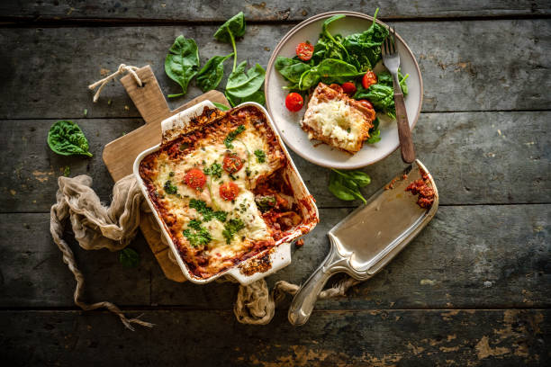

How to make: Lasagne

Description
Lasagna is a hearty and comforting Italian dish that's known for its layers of pasta sheets, rich meaty sauce, creamy béchamel, and melted cheese.
With its satisfying combination of textures and flavors, lasagna has become a beloved classic that warms both the heart and the stomach.
This culinary masterpiece is a symbol of tradition, togetherness, and the art of layering ingredients to create a symphony of taste.
Ingredients
- Lasagna pasta sheets (pre-cooked)
- Ground beef or a mixture of ground meats
- Onion, finely chopped
- Garlic cloves, minced
- Canned crushed tomatoes or tomato sauce
- Tomato paste
- Dried basil, oregano, and thyme
- Salt and black pepper
- Béchamel Sauce
- Shredded mozzarella cheese
How to cook
- Preheat oven to 190 degrees celsuis.
- Spread meat sauce and layer pasta sheets.
- Add bechamel sauce on top of layers.
- Add a handful of cheese on top.
- Cover and bake for 25-30 minutes.
- Remove foil and bake for 15-20 minutes until golden.
- Allow 10-15 minutes rest.
- Slice and serve warm.
- Enjoy!